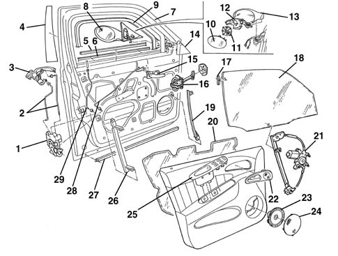

Introduction - PASSENGER COMPARTMENT FRONT SIDE DOORS
- Path
- Descriptions > 70 FITTINGS > 7005 PASSENGER COMPARTMENT FRONT SIDE DOORS > Introduction - PASSENGER COMPARTMENT FRONT SIDE DOORS
- Kind
- system description
- Applies to
- all engines; all production periods
- Interactive page
- https://sloeber94.github.io/elrnDB-a156/en/#/3239236
Applies to: all engines; all production periods
GLOSSARY
Anti-intrusion bar
Structural strengthening element inserted in the door frame to contain deformations towards the inside of the passenger compartment in the case of side impacts.
Multilayer panels
New technology that involves laser welding of overlaid sheet metal panels of different thickness, which are then pressed using conventional methods. This technology creates areas of high strength without the need to add reinforcements and thus keeps overall weight down.
Passive safety
This is the collection of measures which interact to reduce the consequences to the occupants of the vehicle after an accident. The following come into this category: the laminated windscreen, the collapsible steering column, the door opening cables, the material from which the steering wheel is made, the absence of dangerous projections and corners in the dashboard, the structure of the pedals, the shape and resistance of the seats, the head restraints, the seat belts (also with pre-tensioners), the air bags and the bodyshell with differentiated resistance, in other words the passenger survival cell which is as rigid as possible and the front and rear sections, on the other hand, with crumple zones designed to gradually absorb the energy of the impact.
VIEW OF ASSEMBLY
The diagram shows the entire subassembly

1, Lock 2, Links between exterior handle and lock 3, Outer handle 4, Pillar outer cover 5, Inner glass scraper trim 6, Outer glass scraper trim 7, Door frame 8, Rear view mirror 9, Window channel 10, Reflector 11, Motor 12, Bracket 13, Cover 14, Corner cover 15, Inner handle 16, Door opening limiter 17, Window fastening element 18, Window glass 19, Front guide 20, Water guard protection 21, Window opening mechanism 22, Panel with tweeter 23, Speaker 24, Speaker grille 25, Interior grab handle with electric window controls 26, Rear guide 27, Lower trim 28, Interior opening handle 29, Safety link
STRUCTURE
The front doors are produced using a new multilayer sheet steel technology (*). Sheet steel panels of different thickness are joined by laser welding, then processed using conventional pressing techniques.
This technology creates load-bearing parts (at the front) without the need to add stiffening structures. Weight is reduced and overall rigidity increased.
To ensure high passive safety (*), the structure is also fitted with a side-impact bar (*) to limit deformation due to lateral impact.
FITTINGS
The various devices and controls are mounted on the structure according to criteria designed to facilitate repair operations:
- The door wiring coupling can be disconnected without removing the door panel.
- The rear view mirror may be removed without taking off the door panel.
- The door lock can be removed by only removing the inner panel.
- The outer handle and lock barrel may be changed by simply removing the interior panel.
SEALS
The door seals have been designed to guarantee a perfect seal and eliminate aerodynamic rustling.